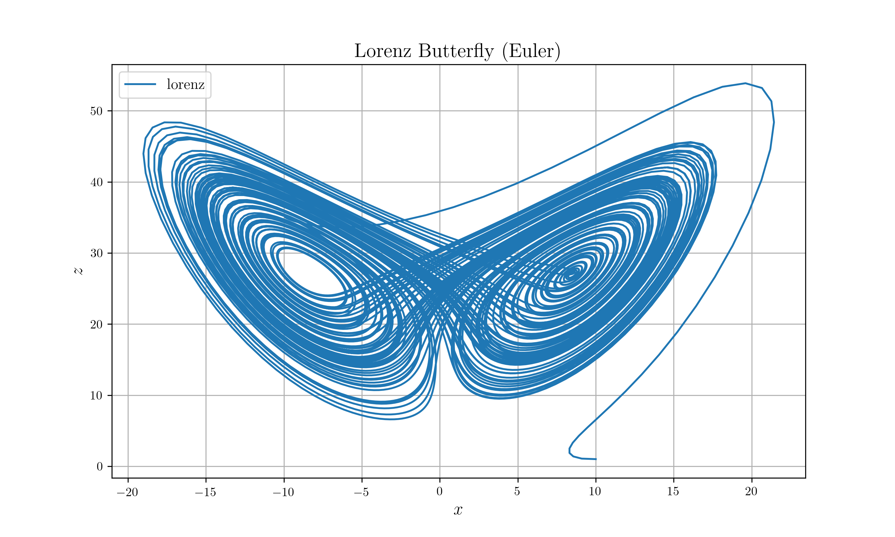
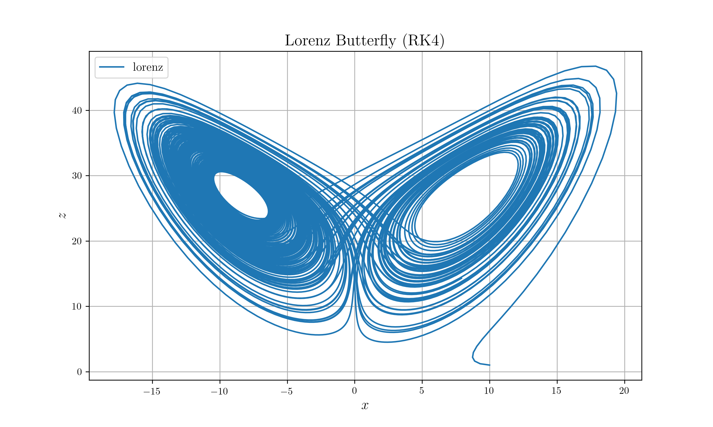

9 Ordinary Differential Equation
9.1 Introduce ODE Trait & Structure
9.1.1 ODE Trait
ODEstructures are divided by two kindsExplicitODEImplicitODE
ODEtrait is given aspub trait ODE { type Records; type Vector; type Param; type ODEMethod; fn mut_update(&mut self); fn integrate(&mut self) -> Self::Records; fn set_initial_condition<T: Real>(&mut self, init: State<T>) -> &mut Self; fn set_boundary_condition<T: Real>( &mut self, bound1: (State<T>, BoundaryCondition), bound2: (State<T>, BoundaryCondition), ) -> &mut Self; fn set_step_size(&mut self, dt: f64) -> &mut Self; fn set_method(&mut self, method: Self::ODEMethod) -> &mut Self; fn set_stop_condition(&mut self, f: fn(&Self) -> bool) -> &mut Self; fn set_times(&mut self, n: usize) -> &mut Self; fn check_enough(&self) -> bool; }Records: The type to save results of ODE. UsuallyMatrixis used.Vector: Vector can be below things.Vec<f64>: Used forExplicitODEVec<Dual>: Used forImplicitODE
Param: Also it can bef64orDualODEMethod: Method for solving ODEExMethod: Explicit methodEuler: Euler first orderRK4: Runge Kutta 4th order
ImMethod: Implicit method (to be implemented)BDF: Backward Euler 1st orderGL4: Gauss Legendre 4th order
9.1.2 State<T> structure
To use
ODEtrait, you should understandState<T>first.#[derive(Debug, Clone, Default)] pub struct State<T: Real> { pub param: T, pub value: Vec<T>, pub deriv: Vec<T>, }Tcan bef64orDualparamis parameter for ODE. Usually it is represented by time.valueis value of each node.derivis value of derivative of each node.
For example,
\[ \frac{dy_n}{dt} = f(t, y_n) \]
- \(t\) is
param - \(y_n\) is
value - \(f(t,y_n)\) is
deriv
Methods for State<T> are as follows.
to_f64(&self) -> State<f64>to_dual(&self) -> State<Dual>new(T, Vec<T>, Vec<T>) -> Self
9.1.3 ExplicitODE struct
ExplicitODE is given as follow :
#[derive(Clone)]
pub struct ExplicitODE {
state: State<f64>,
func: fn(&mut State<f64>),
step_size: f64,
method: ExMethod,
init_cond: State<f64>,
bound_cond1: (State<f64>, BoundaryCondition),
bound_cond2: (State<f64>, BoundaryCondition),
stop_cond: fn(&Self) -> bool,
times: usize,
to_use: HashMap<ToUse, bool>,
}state: Current param, value, derivativefunc: Function to updatestateinit_cond: Initial conditionbound_cond1: If boundary problem, then first boundary conditionbound_cond2: second boundary conditionstop_cond: Stop condition (stop beforetimes)times: How many times do you want to update?to_use: Just check whether information is enough
9.2 Example
9.2.1 Lorenz Butterfly
extern crate peroxide;
use peroxide::*;
fn main() {
// =========================================
// Declare ODE
// =========================================
let mut ex_test = ExplicitODE::new(f);
let init_state: State<f64> = State::new(
0.0,
vec![10.0, 1.0, 1.0],
vec![0.0, 0.0, 0.0],
);
ex_test
.set_initial_condition(init_state)
.set_method(ExMethod::Euler)
.set_step_size(0.01f64)
.set_times(10000);
let mut ex_test2 = ex_test.clone();
ex_test2.set_method(ExMethod::RK4);
// =========================================
// Save results
// =========================================
let results = ex_test.integrate();
let results2 = ex_test2.integrate();
// =========================================
// Write results to pickle
// =========================================
let mut wt = SimpleWriter::new();
wt
.set_path("example_data/lorenz.pickle")
.insert_matrix(results)
.insert_matrix(results2)
.write_pickle();
}
fn f(st: &mut State<f64>) {
let x = &st.value;
let dx = &mut st.deriv;
dx[0] = 10f64 * (x[1] - x[0]);
dx[1] = 28f64 * x[0] - x[1] - x[0] * x[2];
dx[2] = -8f64/3f64 * x[2] + x[0] * x[1];
}If plotting pickle data with python, then

Lorenz with Euler

Lorenz with RK4
9.2.2 Simple 1D Runge-Kutta
\[\begin{gathered} \frac{dy}{dx} = \frac{5x^2 - y}{e^{x+y}} \\ y(0) = 1 \end{gathered}\]
extern crate peroxide;
use peroxide::*;
fn main() {
let init_state = State::<f64>::new(0f64, c!(1), c!(0));
let mut ode_solver = ExplicitODE::new(test_fn);
ode_solver
.set_method(ExMethod::RK4)
.set_initial_condition(init_state)
.set_step_size(0.01)
.set_times(1000);
let result = ode_solver.integrate();
let mut st = SimpleWriter::new();
st.set_path("example_data/rk4_test.pickle")
.insert_matrix(result)
.write_pickle();
}
fn test_fn(st: &mut State<f64>) {
let x = st.param;
let y = &st.value;
let dy = &mut st.deriv;
dy[0] = (5f64*x.powi(2) - y[0]) / (x + y[0]).exp();
}